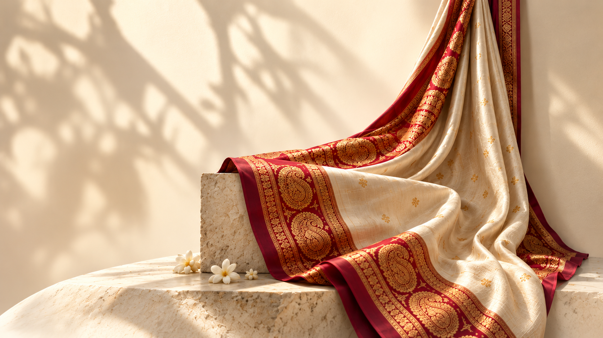
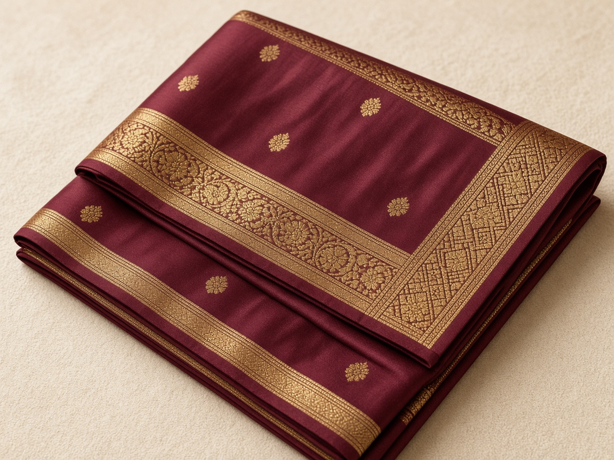
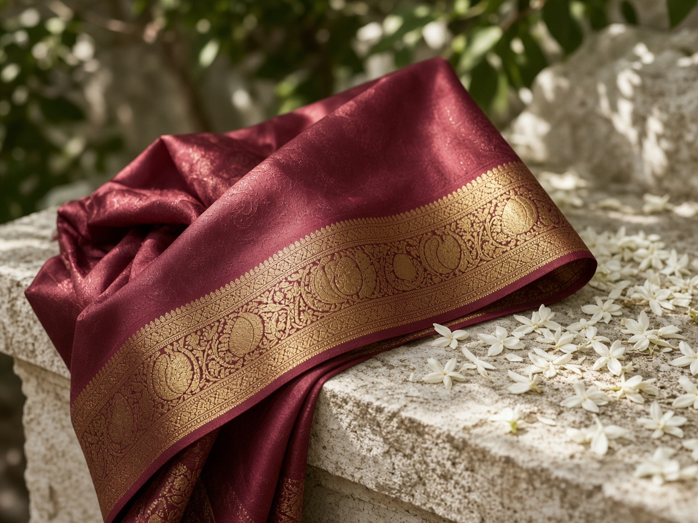

Women
Classic Zari Saree
₹ 24,500


A Royal Heritage · Since 1912
Pure silk.
Woven in Mysore.
For generations.
Our Collections

Our Heritage · Since 1912
Under Wodeyar patronage and carried forward by KSIC, our Mysore mills weave pure mulberry silk with genuine gold and silver zari — sarees, shirts, kurtas, and ties for every generation.
Featured Products
For Every Occasion
From bridal sarees to silk kurtas and shirts — Mysore silk for every celebration, for her and him.
Explore Wedding Collections